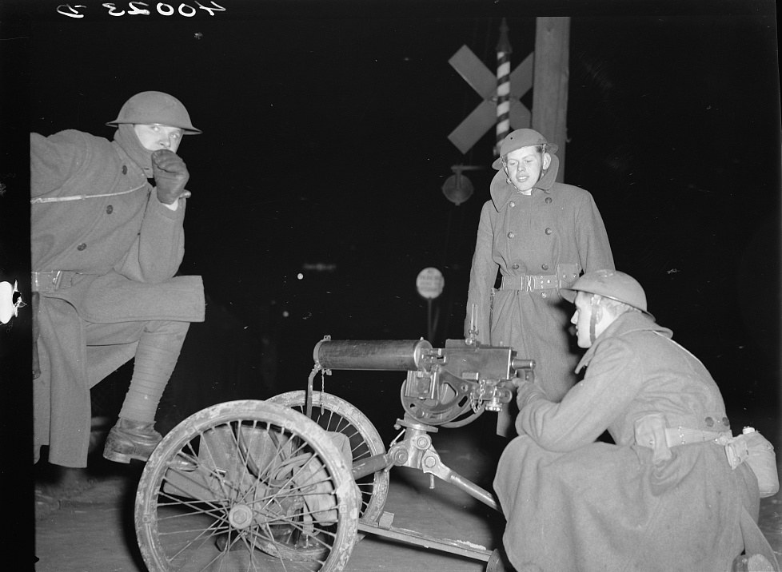

Directions: Study the photograph and the background note, then answer the questions.

Background. When the Flint sit-down strike began on December 30, 1936, Governor Frank Murphy sent the National Guard to Flint. A governor sending soldiers to a strike usually meant the soldiers would clear the plant. Murphy ordered the Guard to keep order and protect people and property, and he refused to use it to drive the strikers out of the Fisher Body plants. The men inside stayed for forty-four days, until General Motors recognized their union.
1. The photograph shows soldiers with a machine gun at a labor strike, and yet the strikers were not driven out. Explain the difference between what this force was positioned to do and what Governor Murphy actually ordered it to do, and why his order decided the strike's outcome.
2. A General Motors manager in January 1937 says he will simply hire new men and restart the line. Why could he not do it while the strikers held the plant?
3. In February 1937, the same month Flint settled, President Roosevelt sent Congress a plan about the federal courts. State the plan in one sentence, and state what happened to it by July.
4. By the spring of 1938, unemployment had climbed back toward nineteen percent. Name the two government actions of 1937 that pulled money out of the economy, and define the policy the administration adopted in response.
1. Explain the difference between the Guard's position and the governor's orders, and why the order decided the strike. The Guard was positioned as a force able to clear the plants by arms, machine guns overlooking the factories, which is what sending troops to a strike had usually meant. Murphy ordered it to keep order and protect people and property, and refused to use it to evict the strikers. Because the company could not retake the plants by its own guards, as the Battle of the Running Bulls had shown, only the Guard could have ended the occupation by force. With eviction refused, General Motors had to settle, and on February 11 it recognized the United Auto Workers. (Blueprint 13)
2. Why could the manager not hire new men and restart the line? The strikers were inside, holding the plant and its machines in a sit-down strike. Replacement workers cannot run a line they cannot reach; bringing them in would have required a fight to retake the building, which neither the company nor the governor would order. That is the mechanism of the tactic: it removed the employer's standard answer to a strike. (Blueprint 13)
3. State the court plan of February 1937 and its fate by July. Roosevelt proposed that for every federal judge over seventy who did not retire, the president could appoint an additional judge, up to six new justices on the Supreme Court, a plan opponents named court packing. The Senate resisted through the spring, and in July 1937 it sent the bill back to committee, where it died, even as the Court upheld the Wagner Act and Social Security. (Blueprint 14)
4. Name the two 1937 actions that pulled money out of the economy, and define the policy adopted in response. Federal spending cuts that shrank the relief rolls, and the new Social Security payroll taxes begun in January 1937, which withdrew pay for benefits not payable monthly until 1940. The response, in the spring of 1938, was deficit spending: government spending beyond the revenue it collects, financed by borrowing, used to put money into an economy in a slump. (Blueprint 14)
Teacher note. This check is formative. Question 1 is the reasoning diagnostic: students who write only that soldiers were present have described the photograph without the decision that gave it meaning. Question 4 predicts success on the writing task, because it asks students to hold a cause (two withdrawals) and a named policy (deficit spending) in one answer.